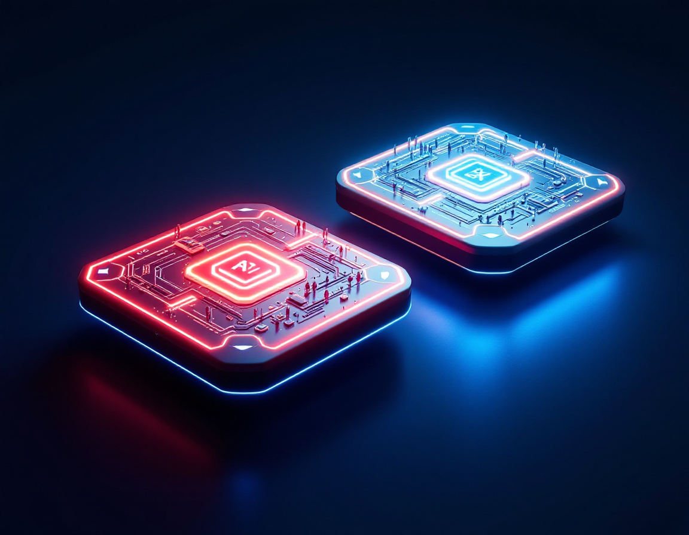
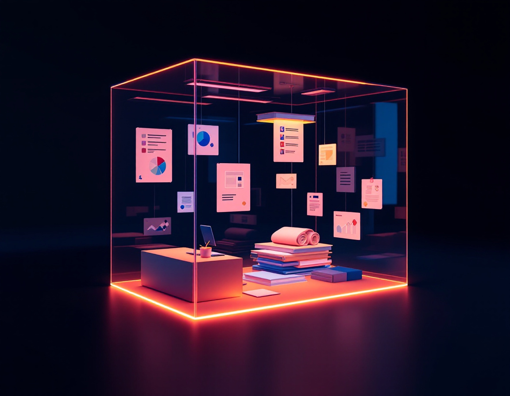
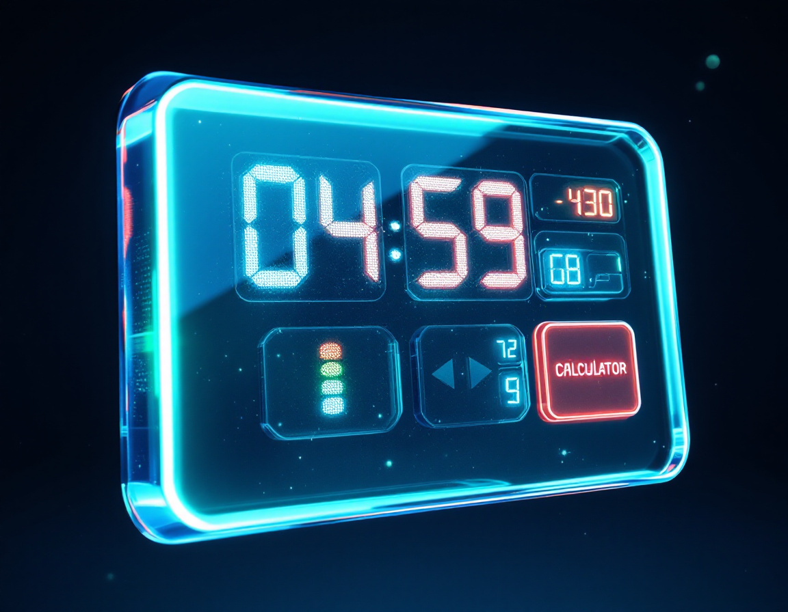

Собранный руками, по восьми шагам, с инструкцией и тремя тестами. Он знает вашу задачу и отвечает по вашим правилам
Файлы вы носите ему руками. Про вашу почту он не знает. Работает, только когда вы открыли чат. Инструменты у него одни: слова
Документы, сайты, видео, статьи. До трёхсот в один блокнот. Он читает только их
Нажали на сноску и попали в то самое место документа. Проверяется за секунду
Чего нет в источниках, он честно не знает. Это его главное свойство, а не недостаток

Спросил, получил ответ. Отвечает из головы, в интернет и файлы лезет по просьбе.
Быстрые вопросы, тексты, разбор одного документа.
Браузер и телефон
Не отвечает, а доводит дело до конца. Сам открывает браузер, ходит по вашей почте и диску, создаёт документы, делает многошаговые задачи.
Здесь же плагины подключаются прямо из плюса.
Браузер и телефон · свой недельный лимит
Агент, который работает с файлами на вашем компьютере. Ставит, настраивает, правит, запускает.
Нужен, когда задача выходит за пределы браузера.
Только десктопная версия

Кто он и как работает. Одинаково работает где угодно: вы приносите ему данные каждый раз
Где лежат ваши документы и ваши правила. Один и тот же ассистент внутри проекта отвечает точнее, потому что видит папку
Одна просьба. Работает здесь и сейчас. Закрыли чат, и его больше нет. Последовательность держите в голове вы
Методология. Внутри несколько шагов подряд плюс правила: когда применять, что спрашивать, в каком виде отдавать, чего не делать никогда. Живёт постоянно
Сам сервис: почта, диск, планировщик. Раньше вы его просто подключали и дальше сами думали, что с ним делать
Приложение плюс навыки к нему. Внутри описано, что ChatGPT умеет с этим сервисом делать и какими фразами его звать. Сценарии приезжают вместе с ним
chatgpt.com/plugins. Здесь витрина, поиск и вкладка «Навыки» рядом. Отсюда ставят надолго
Плюс рядом с полем ввода, и там же кнопка «Подключиться». Работает и в режиме Работа. Десктопная версия не нужна
Сводка по вашим темам, разбор почты «что горит», план дня из календаря, подготовка к завтрашним встречам, три вечерних вопроса
Кому я писал и не ответили, что я обещал и не сделал, что нового у ключевого клиента, дни рождения, просроченные задачи
Конкуренты за неделю, что пишут про нас, изменения в законах, курс и себестоимость, новые тендеры по профилю
Пятничный разбор недели, черновик отчёта руководителю, пульс команды, тренировки и меню, что посмотреть на выходных

Всё то же самое, что в браузере, плюс Codex и плагины, которым нужен компьютер. Notion, например
Работает с файлами на вашем компьютере: разбирает папки, переименовывает, собирает документы, пишет и запускает
Доделываете свой навык из своей работы и заводите второй проект. Проверяете навык в новом чате
Три задачи в расписании и один калькулятор, опубликованный ссылкой. Одна задача обязательно личная